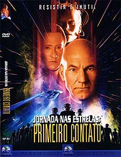
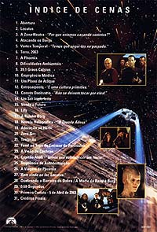

|
Por Luiz
Felipe do Vale Tavares
O
Filme
 Nesse
filme os Borgs viajam para o passado da Terra em uma tentativa de
impedir o primeiro contato dos terrqueos com seres aliengenas.
Cabe a Picard & cia. impedi-los.
"Primeiro Contato" foi um filme muito antecipado
pelos fs, afinal teramos uma nova Enterprise, um novo design,
novos uniformes, os Borgs como viles e uma viso do primeiro
contato entre humanos e Vulcanos.
"Primeiro Contato" se mostrou um filme muito
superior ao antecessor "Generations", que tambm
provocou muita antecipao e posteriormente decepo. O maior
problema com "Generations" que os roteiristas
quiseram fazer muito em um nico filme. Em pouco menos de duas
horas de durao tivemos o lanamento da Enterprise-B, a
suposta morte de Kirk, a promoo de Worf, a utilizao por
Data de seu chip de emoes, a volta das Klingons renegadas
Lursa e B'tor, a morte da famlia de Picard, a destruio da
Enterprise-D e, finalmente, a morte de Kirk. Se todos esses
eventos fizessem parte de um todo na histria em vez de serem
eventos isolados, talvez o filme fosse bem melhor.
"Primeiro Contato", por seu turno, usou como
premissa uma histria bem mais simples, mas que funciona bem
melhor. A produo tambm teve o cuidado de fazer um filme que
agradasse tanto aos trekkers como tambm ao pblico em geral. O
resultado um filme mais amarrado e que no distrai a
audincia com tantas informaes que pareciam inteis
histria propriamente dita.
Embora seja o roteiro de "Primeiro Contato" um
amontoado de clichs (viagem no tempo, mudana no rumo da
histria etc), ele funciona perfeitamente, tudo graas
direo segura de Jonathan Frakes, aos elevados valores de
produo e perfeita qumica entre os atores. Certamente vou
sentir falta de James Cromwell e Alfre Woodard nos prximos
filmes.
Imagem
 O
DVD regio 4 idntico ao regio 1. Quando foi lanado nos
EUA em 1999, foi considerado como um dos melhores DVDs quanto
imagem. At hoje ainda fantstico, sendo um dos melhores
trabalhos da Paramount.
A imagem de alta nitidez, com cores vivas. A cena da caminhada
pelo casco externo da Enterprise um show parte. Podemos ver
detalhadamente todas as estrelas e Terra ao fundo.
O filme apresentado em widescreen anamrfico na proporo de
2,35:1.
Som
O udio apresentado em ingls (Dolby Digital 5.1), portugus
(Dolby Surround) e espanhol (Dolby Surround).
O som em ingls Dolby 5.1 fenomenal, criando um poderoso
ambiente sonoro e colocando o telespectador dentro do mundo de Jornada
nas Estrelas. Nas cenas na ponte de comando podemos ouvir
todos os tpicos efeitos sonoros vindos de todas as direes da
sala.
Melhor ainda a cena em que a Enterprise, logo no comeo do
filme, capta a transmisso dos Borgs. As vozes da coletividade
fazem o cho tremer. fantstico.
O udio em portugus est disponvel em simples estreo
surround, assim como o udio em espanhol. O DVD tem opes de
legendas em ingls (timo para treinar essa lngua), portugus
e espanhol.
Extras
Infelizmente s temos dois trailers de cinema como extras. Mas
so trailers bem legais e com opo de udio 5.1. Eu,
particularmente, adoro ter esses trailers, pois me trazem as boas
lembranas de v-los pela primeira vez no cinema e sentir aquela
antecipao pela chegada do filme.
"Primeiro Contato" daria uma excelente edio
especial. Como os valores de produo so de primeira classe,
seria timo se tivssemos um documentrio da produo,
entrevistas com os atores, ter acesso aos esboos da Enterprise-E
para vermos como a nave foi concebida desde o incio etc.
A Paramount desde a poca dos LaserDiscs (primeiro formato a
trazer as famosas edies especiais recheadas com extras) jamais
se importou em lanar edies especiais dos filmes de Jornada.
Felizmente esse quadro coema a mudar com o lanamento de "Jornada
nas Estrelas - O Filme - Edio do Diretor" em DVD nos
EUA no final de 2001, que trar cenas inditas, novos efeitos
especiais e alguns extras bem interessantes.
O problema que sero provavelmente relanados todos os filmes
da srie em edies especiais, e quem j comprou as edies
anteriores em DVD com certeza ter interesse em comprar os novos.
Mas isso no significa que um mal negcio investir nos DVDs
atuais de Jornada, pois as edies especiais, se forem realmente
lanadas, s chegaro nos EUA no final de 2002 e aqui no Brasil
provavelmente somente em 2003.
Ficha
Tcnica
Extras:
Menu interativo, Seleo de Cena, Trailer Teaser e Trailer de
Cinema
Vdeo:
Widescreen (2,35:1) anamrfico
udio:
Ingls (Dolby Digital 5.1 Surround)
Portugus (Dolby Digital 2.1 Surround)
Espanhol (Dolby Digital 2.1 Surround)
Legendas:
Ingls, Portugus e Espanhol
Ano de produo:
1996
Durao:
111 minutos
Data de Lanamento no Brasil (Regio 4)
31/07/2001
|